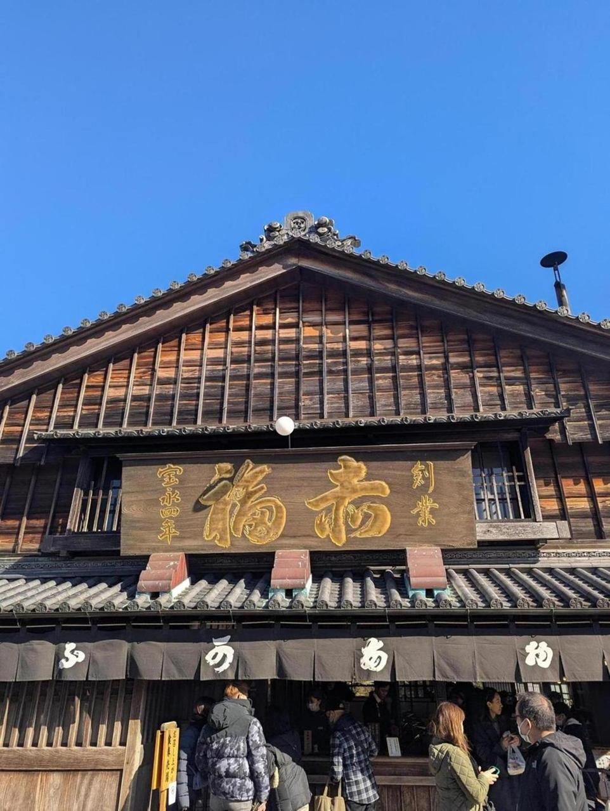
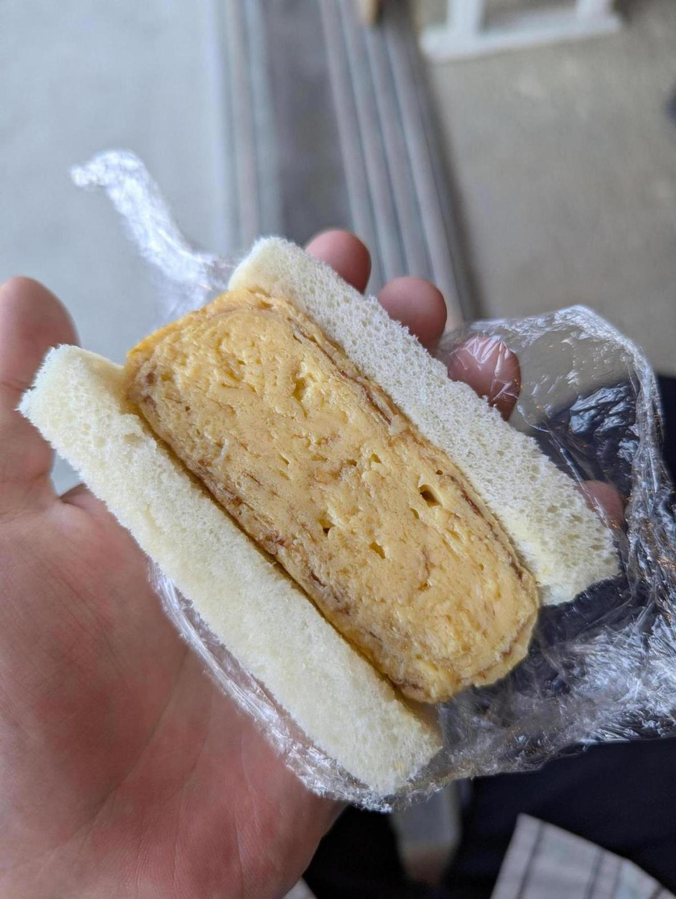
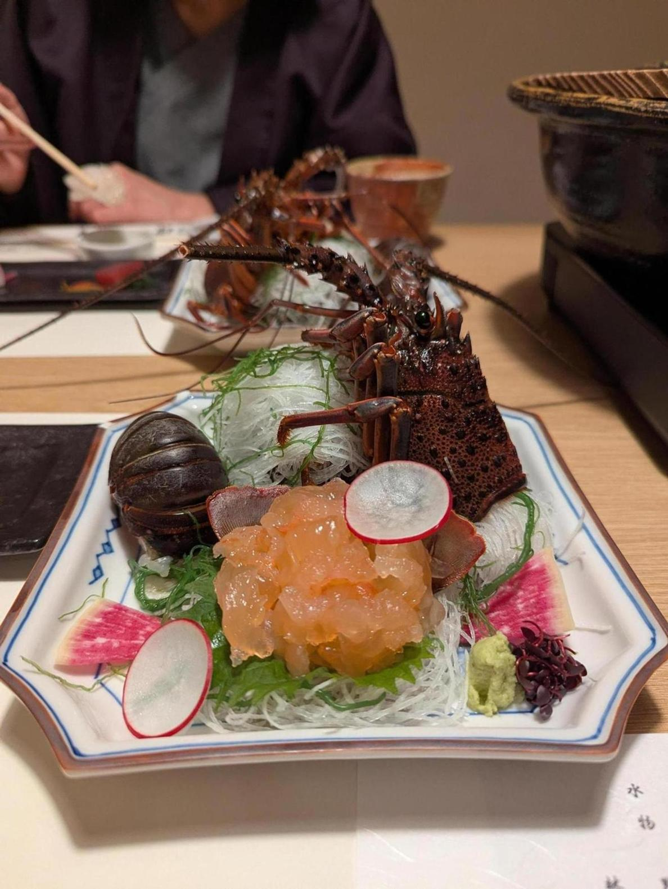

伊勢に旅行に来た！赤福。餅があまり好きじゃないけどこれは美味かった。あんこがうまい。

おかげ横丁のあたりで食べた厚焼きたまごサンド。うまい。

伊勢海老。
前から思っていたけど、海老ってほぼ虫だと思う。美味い虫。というか我々が普段食べない虫も、食べたらうまいことがあるのだろう。
伊勢は伊勢神宮があるからか、街が落ち着いてるというか、観光地らしくはしゃいでない印象を受けた。そこが気に入っている。観光地が実はかなり多いし、伊勢のポテンシャルすごい。アクセスがもう少しよければえらいことになっていたのだろう。